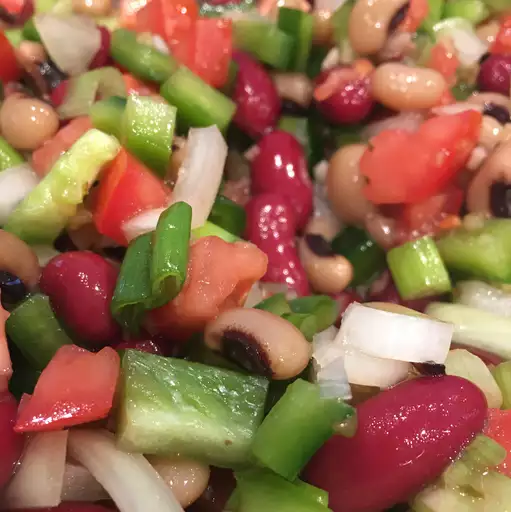

Texas Caviar

Fresh caviar from the waters of texas
This Texas caviar features black-eyed peas, black beans, and chopped vegetables marinated in a fiery, flavorful dressing. Great with tortilla chips or bread — and plenty of cold iced tea!
Ingredients
- 1 pint cherry tomatoes, quartered
- 1 (15 ounce) can black-eyed peas, drained
- 1 (15 ounce) can black beans, drained
- 1 (8 ounce) bottle zesty Italian dressing
- 1 green bell pepper, chopped
- ½ onion, chopped
- 1 bunch green onions, chopped
- 2 jalapeno peppers, chopped
- 1 tablespoon minced garlic
- ½ teaspoon ground coriander
- 1 bunch chopped fresh cilantro, or to taste
Steps
- Mix together tomatoes, black-eyed peas, black beans, Italian dressing, bell pepper, onion, green onions, jalapeño peppers, garlic, and coriander in a large bowl. Cover and chill salad in the refrigerator for about 2 hours.
- Toss salad with desired amount of cilantro to serve.
Return to main page